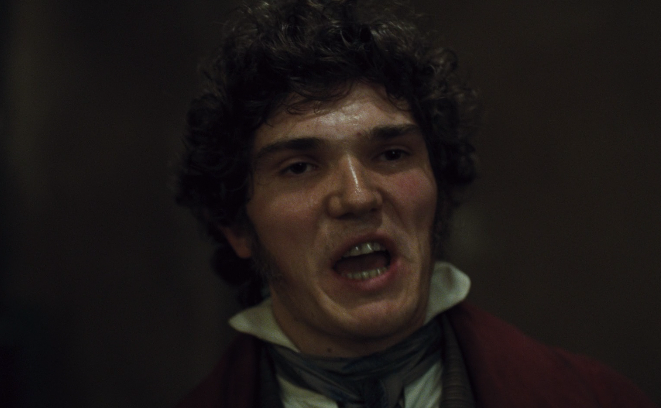
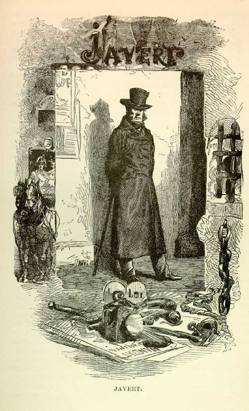
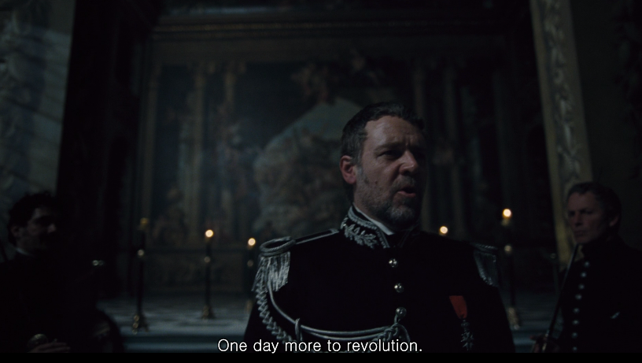
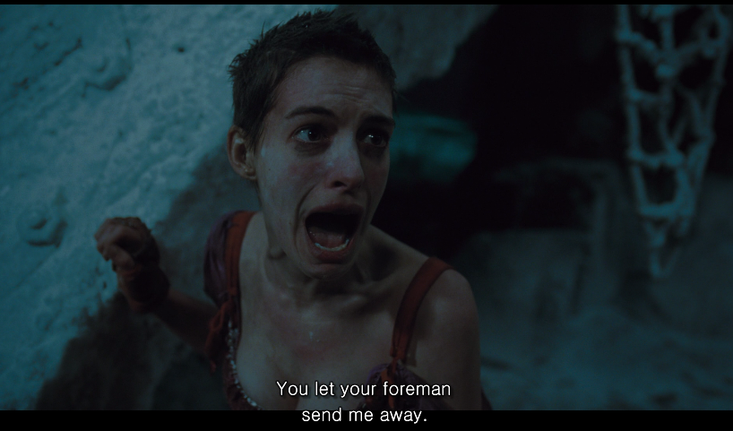
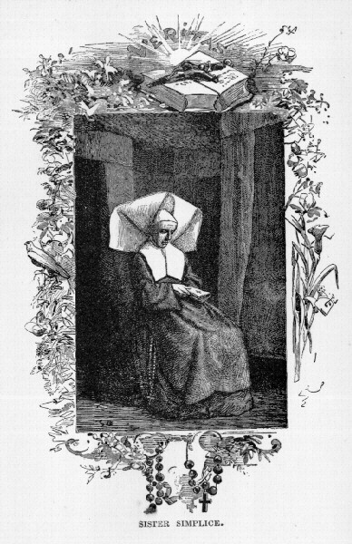
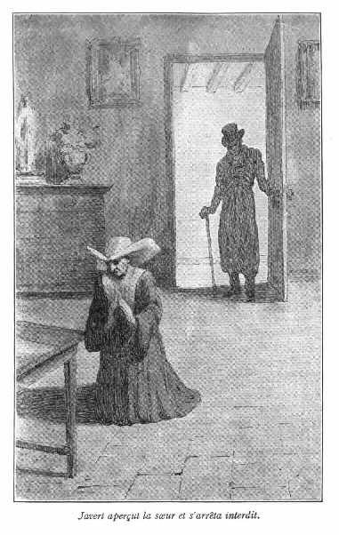
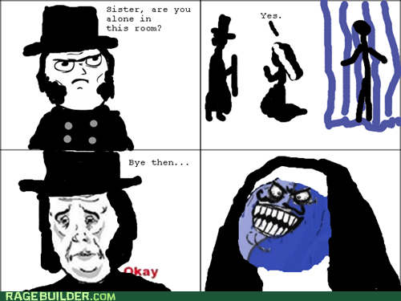

왜 자베르는 자살을 한 것일까 ?
게시: 2021-04-22T06:30:43+09:00
영화 레미제라블이 뮤지컬 영화치고는 공전의 대히트를 기록한 이후, 여러가지 반응이 나왔습니다만, 그 중에는 부정적인 반응도 일부 있었습니다. 러셀 크로우가 노래를 너무 못 부른다는 불평도 있었습니다만, 이런 영화가 왜 12세 관람가로 등급이 매겨졌는가에 대한 것이었습니다. 이 영화에는 매춘과 외설스러운 가사가 그대로 나오니까 그런 평가를 듣는다고 해서 놀랄 일은 아닙니다. 저도 우리 애하고 같이 보면서 '저거저거... ! 어디까지 보여주려는거야 !' 하고 조마조마 했으니까요. 그리고... 이 영화가 청소년들에게 좋지 않은 영향을 주는 부분이 또 있습니다. 바로 자살이지요. 다들 아시다시피, 자베르는 장발장을 풀어주고 자살을 택합니다. 그런데 그런 생각해보셨습니까 ? 왜 자베르는 꼭 자살을 해야 했는가 하는 것 말입니다. 보통 설명으로는 (자베르의 독백 노래 가사에서도 대략 그런 식으로 표현됩니다만) '범죄자는 변하지 않는다'라는 믿음이 장발장의 선행으로 깨지면서, 평생 지켜온 가치관의 혼돈으로 인해 자살을 택할 수 밖에 없었다고 하지요. 하지만 그것만으로 납득이 되시던가요 ? 가치관이 흔들린다고 그것이 목숨을 버릴 정도의 대사건이라고 생각하십니까 ? 사실 영화 레미제라블과 원작 소설 레미제라블은 내용이 다소, 사실 꽤 다릅니다. 가령 영화 속에서 마리우스는 열혈 혁명 남아이자 앙졸라의 동지로 나옵니다만, 원작 소설에서는 한마디로 찌질이 소심남으로 나옵니다. 앙졸라와는 정치적 견해도 달라서, 몇번 어울렸을 뿐 뭐 그렇게 친하지도 않았습니다. 마리우스의 유일한 친구는 쿠르페이락이었지요.

(소설과는 달리 외모가 상당히 투박해보이는 이 친구가 영화 속의 쿠르페이락. 영화 속에서는 앙졸라의 충직한 부하 정도로 나오고, 마리우스하고 이야기도 안하더군요.) 자베르도 영화와 소설이 꽤 다릅니다. 영화 속에서는 마치 대단히 높은 경찰 고위직인 것처럼 나옵니다만, 자베르의 계급인 inspector는 그냥 경위 정도의 계급입니다. 원작 소설 내용을 보면 그는 나이 40이 되어서 inspector가 되었으니, 밑바닥 출신치고는 성공한 것이긴 합니다만, 영화 속에서 나오는 것처럼 백여명의 부하들을 도열시키고 연설을 할 정도의 인물은 아닌 것이지요. (참고로 우리나라 경찰 대학 나오면 20대에 경위를 답니다.)
 
(원작 소설 속의 자베르와 영화 속의 자베르. 어느 쪽이 더 멋진가요 ? 실은 원작 소설 속 자베르는 원래 사복 형사라는 거...) 자베르가 무척이나 성실한 사람으로 나오는 점은 영화나 소설이나 동일합니다. 장발장이 마들렌 시장으로 있을 때도, 감히 겁도 없이 직속 상관인 마들렌 시장에 대해 뒷조사를 하기도 하고, 또 그 뒷조사 결과 자신이 잘못 생각했음을 안 뒤에는 굳이 그 사실을 마들렌 시장에게 털어놓으며 자신을 처벌해달라고 부탁하지요. 이건 진짜 FM대로 행동하는 성실한 경찰 공무원의 표상이라고 할 수 있는 사람입니다. 특히 영화 속에 그려진 자베르는 기독교 원리주의자같은 모습을 많이 보여줍니다. 그가 부르는 노래 Stars에는 이런 가사가 있지요. And so it has been and so it is written 그래서 그렇게 씌여져 있지 On the doorway to paradise 천국으로 가는 길목에 말이야 That those who falter and those who fall 흔들리고 타락하는 사람들은 Must pay the price! 댓가를 치러야만 한다고 ! 또 자베르가 팡틴느를 체포할 때 부르는 노래 마지막은 이렇게 끝이 납니다. 저도 우리 애에게 해주고 싶은 말입니다. (다만 이 부분은 그다지 rhyme이 잘 맞지는 않는 것 같아요.) Honest work, just reward, 정직한 노동과 정당한 보상 That's the way to please the Lord. 그것만이 주님을 기쁘게 하는 것이지

(영화에서 앤 헤서웨이의 고음 성량이 가장 발휘되어야 했던 부분이 이 부분입니다. 이 장면을 보시고 다른 사람의 직장이나 일터를 빼앗는다는 것, 즉 그 사람의 밥줄을 끊어놓는다는 것이 얼마나 가혹한 일인지 깨달으셔야 합니다.) 이런 독실한 천주교인이, '악당은 변하지 않는다'라는 믿음이 흔들렸다고 지옥행 티켓을 끊는 중죄인 자살을 범한다 ? 말이 안되는 이야기지요. 원작 소설에서는 자베르가 자살을 택하는 과정을 (민음사 번역본 기준으로) 무려 20페이지에 걸쳐서 묘사합니다. 그리고, 그 묘사를 참을성 있게 다 읽어보면 왜 자살하는지가 나옵니다. 바로 경찰관으로서의 직무와 연관된 법적인 양심 때문에 그랬던 것입니다. 하수구 출구에서 장발장이 자베르를 마주친 것은, 영화 속에서는 자베르의 집요한 추적 덕분이었습니다만, 원작 소설에서는 어디까지나 우연의 일치로 인한 것으로 나옵니다. 여기서, 그는 장발장의 부탁을 들어주어, 몸에 X칠을 한 장발장과 (정신을 잃은) 마리우스를 삯마차에 태워 마리우스의 외할아버지의 집으로 데려다 줍니다. 게다가 마지막으로 코제트에게 인사를 하겠다는 장발장의 부탁까지 들어주기 위해, 장발장을 삯마차로 집까지 데려다 주지요. 그렇게 장발장이 집에 들어간 사이에, 밖에서 기다리고 있어야 할 자베르가 사라져 버리지요. 장발장은 왜 자베르가 자신을 체포하지 않고 그냥 사라졌는지 끝끝내 알지 못했습니다. 자베르는 몸에 X칠을 한 장발장과 마리우스를 태우고 다니느라 좌석이 더러워진 삯마차에 대한 보상으로 무려 80프랑 (현재 원화가치로 대략 128만원 ! 당시 마리우스의 1달 월급이 60프랑 정도였으니 정말 큰 돈입니다) 이나 지불하는 등 뒷정리를 해놓고, 밤새 번민하다가, 새벽에 조용히 자살을 합니다. 유서로는 당시 파리 경찰청의 이런저런 사소한 비리 등에 대해 개선안을 건의하는 편지를 경찰청장에게 남깁니다. 경찰청에서는 이 횡설수설하는 편지를 보고는 '자베르가 미쳐서 자살을 한 모양'이라고 결론을 내버립니다.
(전에도 소개드린, 20프랑짜리 진짜 나폴레옹 금화입니다. 소설 속에서 자베르는 이것 4개를 꺼내어 삯마차 비용을 지불합니다. 당시 사복 경찰에게 일일이 경찰차를 못 내어주니까, 택시에 해당하는 삯마차 비용을 공금으로 주었다고 합니다.) 자베르가 진짜 자살한 이유는 무엇이었을까요 ? 그는 장발장이 자신을 바리케이드에서 살려주었을 때, 이미 장발장을 용서했습니다. (원작 소설에서도 자신이 장발장을 용서한 것에 대해 자베르 스스로가 놀랐다 라고 씌여있습니다.) 사실 어느 누가 안 그러겠습니까 ? 최소한 목숨에 대한 빚을 진 것이니, 엄청난 채무라고 할 수 있지요. 실은 그 채무 때문에 자살한 것입니다. 자베르는 생명의 은인이든 무엇이든, 경찰관으로서의 의무를 다하기 위해서는 당연히 장발장을 체포해야만 했습니다. 하지만 인간으로서의 자베르는 도저히 생명의 은인이자 선행의 사나이 장발장을 체포할 수가 없었지요. 보통의 사람이라면 그냥 못본 척 넘어갔을 것입니다. 그러나 자베르는 달랐습니다. 그의 투철한 정의감과 강직함이, 법적으로 체포해야만 하는 범인을 모른 척 넘어가는 자신을 용서할 수가 없었던 것이지요. 실제로 범인을 체포할 수 있음에도 개인적인 판단으로 체포하지 않는 것은 직권 남용이라는 범죄가 되어 버립니다. 그렇다고 자베르가 또다시 '내가 범인을 놓아주는 죄를 저질렀소, 날 잡아 가두시오' 라고 자수를 한다면, 그에 대한 수사에 따라 장발장도 결국은 체포되어야만 했겠지요. 여기서 가장 간단한, 그러나 처절한 해결책은 바로 자베르 본인이 스스로 목숨을 끊는 것이었습니다. 그러면 직권 남용이라는 범죄도 없어지고, 장발장에 대한 채무도 갚을 수 있으니까요. 정말 목숨보다 양심을 소중히 한 사람이라고 할 수 있습니다.
(이쯤에서 다시 보는 정직과 양심을 원칙으로 하는 모범 경찰 자베르의 위엄...) 우리 경찰이나 검찰, 그리고 국정원이 정말 자베르처럼 법적인 양심이 투철한 사람으로 가득 채워져 있다면 정말 좋겠다는 생각을 하게 되어, 이렇게 글을 쓰게 되었습니다. 아, 한가지 더. 소설 속에서는 상당히 주요 장면으로 나오지만 영화에서는 아예 생략된 부분을 소개하지 않을 수 없습니다. 바로 생플리스 (Simplice) 수녀 이야기입니다. 생플리스 수녀는 마들렌 시장이 병든 팡틴느를 병원으로 데려왔을 때 간호를 맡았던 수녀인데, 이 수녀의 가장 큰 특징은 절대 거짓말을 하지 않는다는 것이었습니다. 가령 '오늘은 얼굴이 아주 좋아보이시네요'라는 선의의 거짓말조차 하지 않는 정직의 원칙을 자베르 못지 않게 지키던 여자였지요.

(생플리스 수녀를 묘사한 원본 삽화입니다.) 그런데 한가지 사건이 벌어지지요. 인자하고 선행을 베풀던 마들렌 시장이 실은 범법자 장발장으로 드러나 체포된 것입니다. 그날 밤, 마들렌 시장, 아니 장발장은 경찰서에서 탈출하여 신변 정리, 특히 미리엘 주교의 은촛대를 챙기러 자기 집에 돌아왔을 때, 생플리스 수녀도 그 집에 있었습니다. 아직 장발장이 그 방에 있을 때, 탈출한 장발장을 추격하여 자베르가 들이 닥칩니다. 그런 자베르를 맞이한 것이 생플리스 수녀였는데, '지금 혼자 있느냐' '여기 장발장이 있느냐' 라고 묻는 자베르의 질문에 생플리스는 절대 거짓말을 하지 않는다는 원칙을 너무나도 태연하게 깨뜨리고 두번이나 거짓말을 합니다. 이 장면이 원작 레미제라블의 작은 클라이막스 중 하나입니다. 그 수녀가 어떤 여자인지 아는 자베르는 그 수녀의 말을 100% 믿고 그대로 돌아가지요. 덕분에 장발장은 무사히 탈출하여 코제트를 구하러 갈 수 있었습니다.

(생각해보면 미리엘 신부도 장발장을 구하기 위해 식기를 장발장이 훔친 것이 아니라고 거짓말을 했네요. 장발장 때문에 거짓말을 해야 했던 사람이 꽤 많습니다 ?)

(사악한 상플리스 수녀님...)
** 2013년 7월에 다음 블로그에 썼던 글을 목요일에 재탕하는 글입니다.